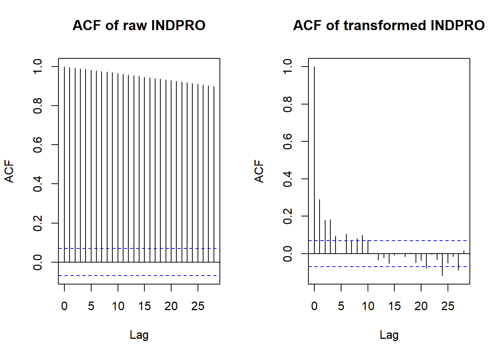
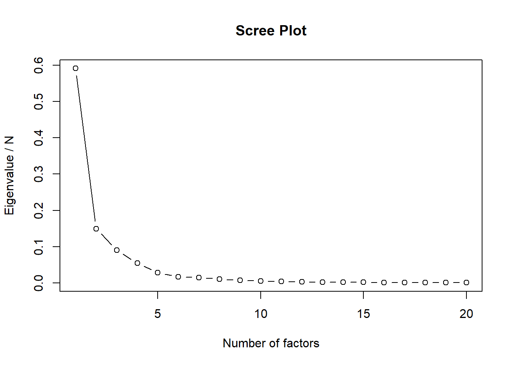
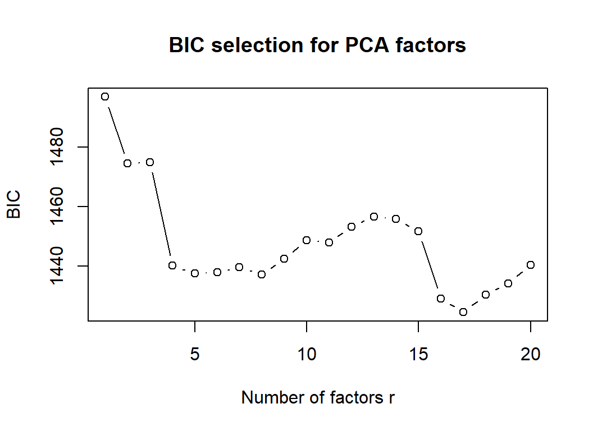
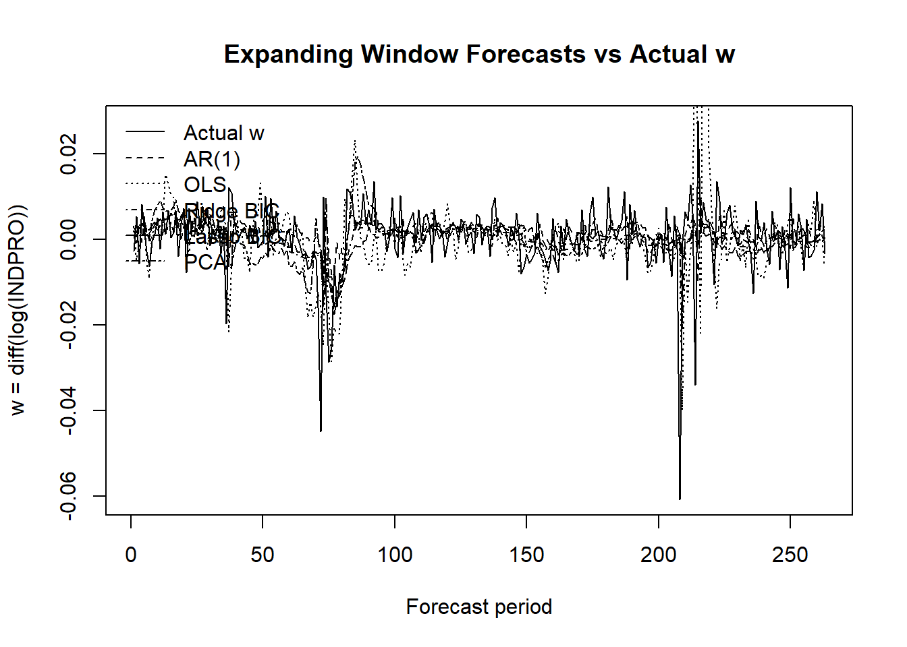
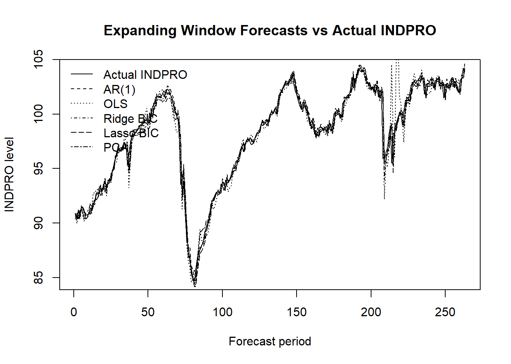

| Step | Method | Purpose |
|---|---|---|
| 1 | Linear interpolation | Fill gaps between observed values |
| 2 | Forward fill | Use the last available observation |
| 3 | Backward fill | Use the next available observation |
| 4 | Mean imputation | Replace any remaining missing values |
Forecasting Industrial Production Using FRED-MD Data
Dinmukhamed Atabay
1 Data Description
The dataset used in this project is the FRED-MD database, a large monthly macroeconomic dataset containing 126 U.S. macroeconomic and financial variables. The dataset includes indicators related to industrial production, employment, prices, interest rates, money, credit, and financial markets.
The target variable is INDPRO, the Industrial Production Index. It measures real output in the manufacturing, mining, and utilities sectors of the U.S. economy. Since industrial production in levels usually follows a trend over time, the target variable is transformed into a stationary growth-rate series using the first difference of the logarithm:
\[ w_t = \log(INDPRO_t) - \log(INDPRO_{t-1}) \]
This transformed variable represents the monthly growth rate of industrial production and is used as the dependent variable in the forecasting models.
2 Data Cleaning and Preprocessing
2.1 COVID-19 Period Removal
Observations from January 2020 to July 2020 are removed from the dataset. This period contains large pandemic-related shocks and structural breaks. These observations are not representative of normal macroeconomic dynamics and may distort model estimation and forecast evaluation.
2.2 Outlier Treatment
Outliers are removed using a robust interquartile range rule. For each numeric variable, values more than ten times the interquartile range away from the median are replaced by missing values. This conservative threshold removes only extremely abnormal observations while keeping regular macroeconomic variation in the dataset.
2.3 Missing Value Treatment
Missing values are handled using a sequential procedure. First, linear interpolation is applied. Then, remaining missing values are filled using forward fill and backward fill. Finally, any remaining missing values are replaced by the mean of the corresponding variable.
2.4 Transformation to Stationarity
The raw INDPRO series is transformed into the log-difference series w. This removes the long-run trend and makes the target variable more suitable for time-series forecasting.

2.5 Standardization
All predictors are centered and standardized before estimation. The target variable is also standardized. This is important because the predictors are measured on different scales. Standardization improves numerical stability and makes penalized regression methods such as Ridge and Lasso more reliable.
3 Training and Test Sample
The initial training sample contains the first 524 observations after cleaning and transformation. The remaining observations are used for out-of-sample forecast evaluation. Forecasts are produced using an expanding-window procedure. In each step, the model is re-estimated using all data available up to that point, and a one-step-ahead forecast is produced for the next period.
4 Forecasting Methods
4.1 AR(1)
The AR(1) model uses only the first lag of the target variable:
\[ y_t = \alpha + \beta y_{t-1} + \varepsilon_t \]
The number of lags is set to one because the project focuses on one-step-ahead forecasting and uses a simple autoregressive benchmark.
4.2 Random Walk
A random walk is a simple benchmark where the best forecast for the next period is the current value. In this project, the main simple benchmark is the AR(1) model, which is a more flexible version because it estimates the persistence parameter instead of fixing it equal to one.
4.3 OLS
The OLS model uses all lagged standardized predictors from the FRED-MD dataset:
\[ y_t = \alpha + X_{t-1}\beta + \varepsilon_t \]
This model can use many macroeconomic variables, but it may overfit because the number of predictors is large.
4.4 Ridge Regression
Ridge regression adds an L2 penalty to the regression coefficients:
\[ \min_\beta \|y - X\beta\|^2 + \lambda \|\beta\|^2 \]
The penalty parameter is selected using the Bayesian Information Criterion over a grid of candidate values.
4.5 Lasso Regression
Lasso regression adds an L1 penalty:
\[ \min_\beta \|y - X\beta\|^2 + \lambda \|\beta\|_1 \]
This method can shrink some coefficients exactly to zero and therefore performs variable selection. In the code, the penalty parameter is selected using the BIC criterion.
4.6 Principal Component Regression
Principal Component Regression (PCR) reduces the high-dimensional predictor matrix to a smaller set of common factors. These factors are extracted using Singular Value Decomposition (SVD) and summarize the information contained in the large number of correlated macroeconomic variables.
The number of principal components is selected using the Bayesian Information Criterion (BIC) over candidate values (r = 1, , 20). For each value of (r), a forecasting regression is estimated and its BIC is computed. The number of factors that minimizes the BIC is selected and used in the final forecasting model.
The forecasting equation is given by
\[ y_t = \alpha + F_{t-1}\beta + \varepsilon_t, \]
where (F_{t-1}) denotes the selected principal components extracted from the predictor matrix.
5 Results
5.1 Principal Component Selection
The scree plot shows how much variation is explained by the first principal components.

The next figure shows the BIC values for different numbers of principal components. The number of factors with the lowest BIC is selected for the PCA regression.

5.2 One-Step-Ahead Forecasts
| Model | Forecast_w | Forecast_INDPRO_level |
|---|---|---|
| AR(1) | 0.002005 | 90.81925 |
| OLS | 0.003173 | 90.92537 |
| Ridge BIC | 0.002161 | 90.83336 |
| Lasso BIC | 0.002784 | 90.89002 |
| PCA Regression | 0.001044 | 90.73194 |
5.3 Root Mean Squared Errors
Forecast accuracy is evaluated using Root Mean Squared Error:
\[ RMSE = \sqrt{\frac{1}{H}\sum_{t=1}^{H}(y_t - \hat{y}_t)^2} \]
A lower RMSE means better out-of-sample forecasting performance.
| Model | RMSE_w | |
|---|---|---|
| 3 | Ridge BIC | 0.007751 |
| 4 | Lasso BIC | 0.008093 |
| 5 | PCA Regression | 0.008378 |
| 1 | AR(1) | 0.008491 |
| 2 | OLS | 0.012639 |
| Model | RMSE_INDPRO | |
|---|---|---|
| 3 | Ridge BIC | 0.754754 |
| 4 | Lasso BIC | 0.786053 |
| 5 | PCA Regression | 0.813868 |
| 1 | AR(1) | 0.825792 |
| 2 | OLS | 1.255582 |
5.4 Forecast Comparison Graphs
The following graph compares actual and forecasted values for the transformed target variable.

The next graph compares the forecasts after converting them back to the INDPRO level.

6 Discussion of Results
The results compare simple autoregressive forecasting, unrestricted regression, regularized regression, and factor-based regression. The best method is the one with the lowest RMSE in the out-of-sample evaluation. Regularized methods such as Ridge and Lasso are expected to perform well in this setting because the dataset contains many correlated macroeconomic predictors. These methods reduce overfitting by shrinking coefficient estimates.
Principal Component Regression is also useful because it summarizes the information in many predictors into a smaller number of common factors. This can improve forecast stability when many variables share similar macroeconomic movements.
OLS may perform worse because it estimates many coefficients without regularization. In high-dimensional macroeconomic data, this can lead to unstable estimates and poor out-of-sample forecasts. The AR(1) benchmark is simpler and often competitive because industrial production growth is persistent, but it does not use the additional information contained in the FRED-MD predictors.
Overall, the preferred model is the one ranked first in the RMSE table. This method provides the most accurate out-of-sample forecasts for industrial production in this forecasting exercise.